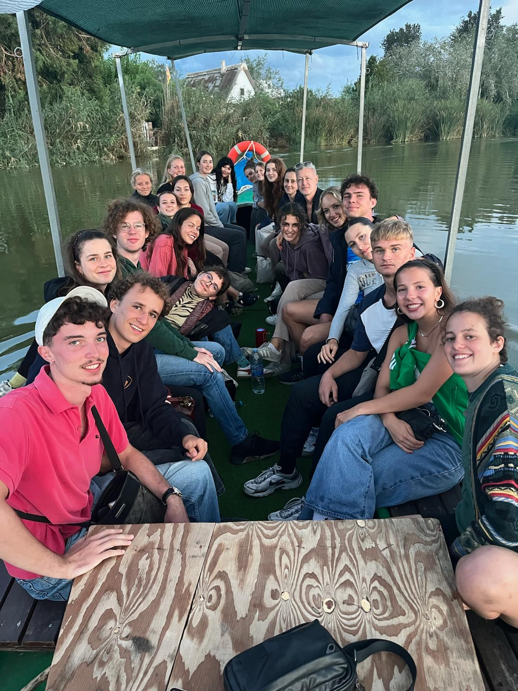
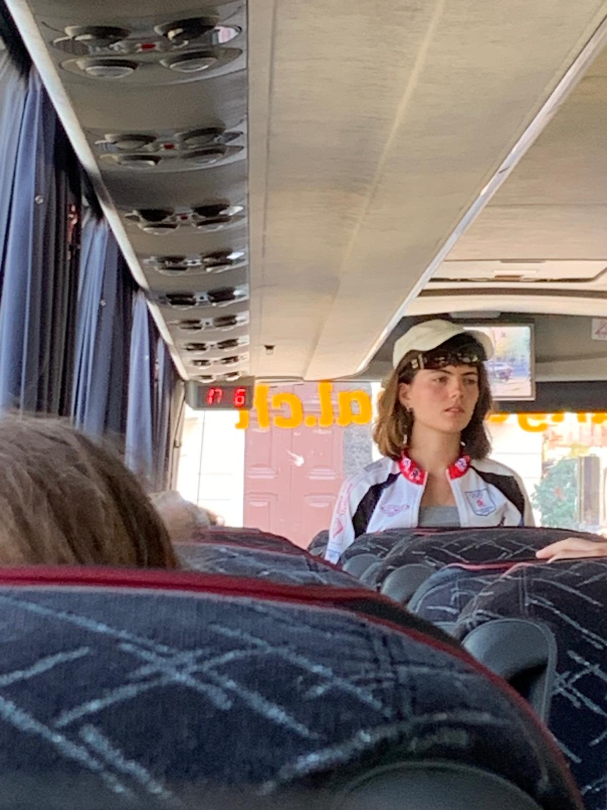
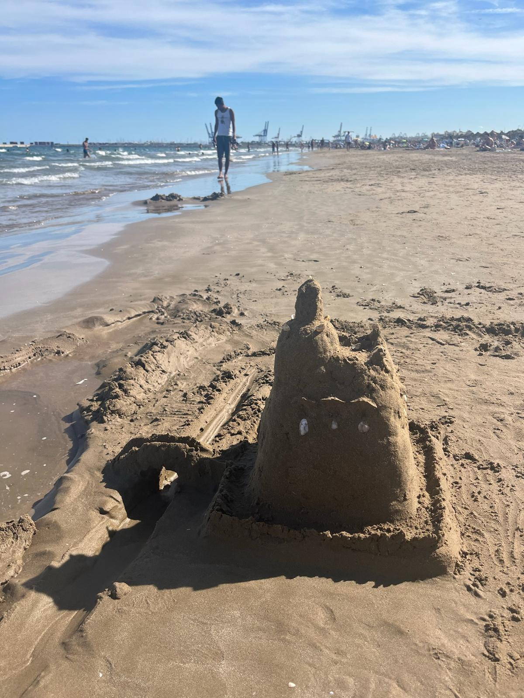
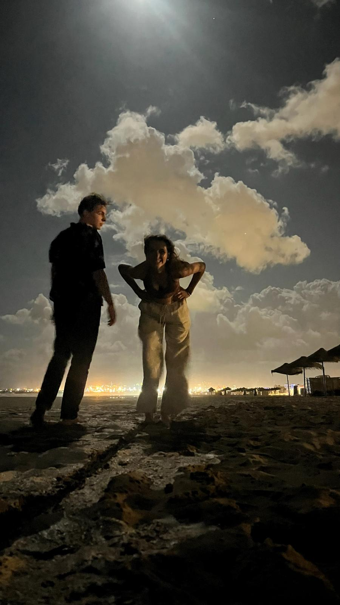

Thanks, all!
It was breathtaking, exhilarating, stunning, beautiful and funny. It was also stressful, annoying, hot, terrifying and dirty. In one word: amazing.
 My class on a little boat on the Albufera.
I can not explain how much I enjoyed this trip. It showed me people from a totally different perspective. Humans I've known for over three years now, in an environment so far from home yet so close together. New friendships have certainly risen or gotten as strong as Graphene 3D. Anyhow, as boys we definitely came closer together. Getting to annoy eachother on a daily basis, but also sharing a lot of truly beautiful homie-moments.
To round off the trip, we all went on a boat to the Albufera. There, our guide Raul told us about the interesting fishing culture around the lake. On the last day, Thursday, me and Julie went to a Contemporary and Modern Art Museum. In the evening all of us went to a restaurant to eat Paella, before going out and about in the town for one last time. I went to the beach and we even witnessed a car crash...
Here are some pictures that don't really match the context anymore, but are still cool or fun or pretty or funny.
 A Julie-Meerkat (Julie-Erdmännchen).
 A more detailed picture of my sand castle.
 Me and Eline on the beach.